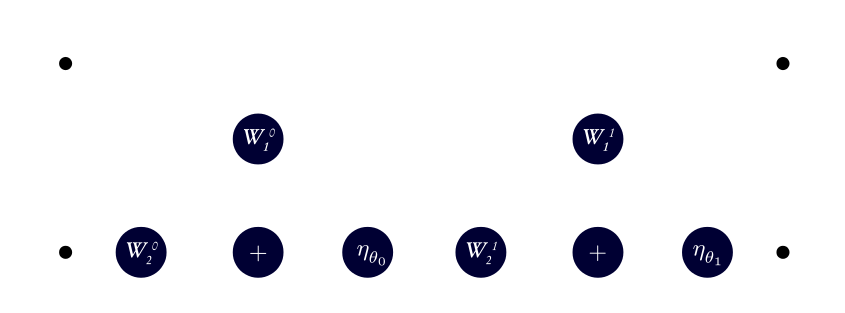
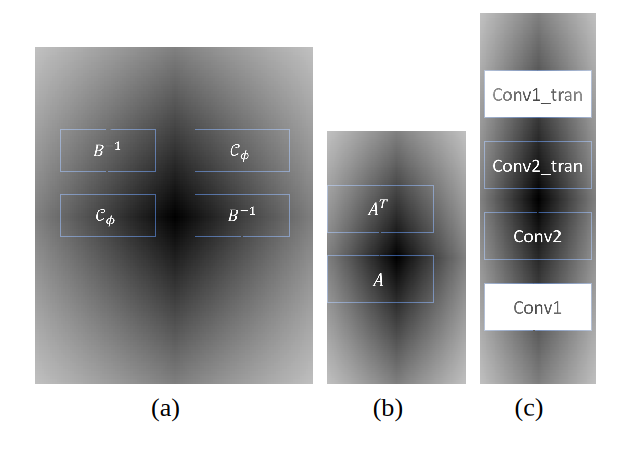
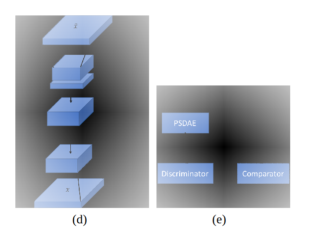

Notes on Jan. 29, 2019
| Date: | Jan 29, 2019 |
|---|---|
| Last Updated: | Jan 29, 2019 |
| Categories: | |
| Tags: |

Contents
Introduction
In this article we would summarize some popular solutions for the inverse problem. To be specific, here we only discuss the methods of inverse problems. Although when introducing some algorithms, we may need to explain what problem they work on, the various topics about which problem we solve is not what we concentrate on in this article.
Generally the solutions could be divided into 2 parts: optimizing methods and stochastic approaches. In the first part, i.e. the optimizing methods, we would introduce different iterative algorithms which are used to find the optimal solution of the problem. In most cases, these algorithms are based on deterministic methods, i.e. the derivatives. In the second part, we would introduce some stochastic methods especially some heuristic methods where we do not need to calculate the gradient but only need to evaluate the loss function. In those 2 parts, we would also talks about machine learning, regularization and some other related topics which have been applied to enhance the performance of the plain algorithms.
In the following parts, we will show not only the methods and ideas but also the state-of-art progress on inverse problem. Our literature resource is mainly from NIPS and IEEE Xplore.
Optimizing methods
Optimizing methods for solving non-linear inverse problem
Conjugate gradient descent
- Title: A new family of conjugate gradient methods for unconstrained optimization
- Author: Mohd Rivaie, Muhammad Fauzi, and Mustafa Mamat
- Year: 2011
- Theory level: Theoretical
- Theory type: Gradient based algotirhm
- Used data: Standard testing benchmarks
- Source: International Conference on Modeling, Simulation and Applied Optimization
- External Reference: A modified PRP conjugate gradient method with Armijo line search for large-scale unconstrained optimization.
Learning abstract:
This paper proposes a new conjugate gradient coefficient which is used in conjugate gradient descent method. As an alternative of Newton's method, conjugate gradient method aims at approximating the Hessian matrix with first order gradient to avoid the computationally expensive second-order term. Regardless the computational cost, this method is slower than Newton's method but faster than first-order gradient descent.
Denote that we need to solve such an unconstrained problem which could be non-linear,
The algorithm could be described as:
- Initialize the input parameter $\mathbf{x}_0$, $k=0$.
- Calculate first-order gradient $\mathbf{g}_k = \nabla f(\mathbf{x}_k)$.
- Compute $\boldsymbol{\beta}_k$ which is the conjugate gradient coefficient.
- Update descent direction: when $k=0$, let $\mathbf{d}_k=-\mathbf{g}_k$; when $k > 0$, $\mathbf{d}_k=-\mathbf{g}_k+\boldsymbol{\beta}_k\mathbf{d}_{k-1}$.
- Use line search to find the best update parameter: $\alpha_k=\arg \min_{\alpha}f(\mathbf{x}_k+\alpha \mathbf{d}_k)$.
- Let $\mathbf{x}_{k+1} = \mathbf{x}_k+\alpha_k \mathbf{d}_k$. If $f(\mathbf{x}_{k+1}) < f(\mathbf{x}_k)$ and $\lVert \mathbf{g}_k \rVert < \varepsilon$, stop; otherwise get back to step 2.
The author also proposes a new conjugate gradient coefficient and proves the convergence of the new coefficient.
Frank–Wolfe Algorithm
- Title: Decentralized Frank–Wolfe Algorithm for Convex and Nonconvex Problems
- Author: Hoi-To Wai, Jean Lafond, Anna Scaglione, and Eric Moulines
- Year: 2017
- Theory level: Theoretical
- Theory type: Gradient based algotirhm
- Used data: Standard testing benchmarks
- Source: IEEE Transactions on Automatic Control
Learning abstract:
This paper introduce a decentralized version of Frank–Wolfe Algorithm which is used to solve a strictly constrained optimizing problem. In this paper, the author assume that there a series of functions $f_i (\mathbf{x})$ which might not be convex, then the problem is
Denote that the adjacent matrix $\mathbf{W}$ has such condition: $\sum_{j} W_{ij} = 1$. Then the algorithm could be described as:
- For each agent, calculate the local average iterate among its neighbor: $\bar{\mathbf{x}}_i = \sum_{j} W_{ij} \mathbf{x}_j$, where $W_{ij}$ is an element of the adjacent matrix.
- For each agent, calculate the local average gradient among its neighbor: $\overline{\nabla F}_i= \sum_{j} W_{ij} \nabla f_j (\mathbf{x}_j)$.
- Let $\boldsymbol{\alpha}_i = \arg \min\limits_{\boldsymbol{\alpha}_i \in \mathcal{D}} \boldsymbol{\alpha}_i^T \overline{\nabla F}_i$.
- Update iterate: $\mathbf{x}_{i+1} = (1-\gamma) \bar{\mathbf{x}}_i + \gamma \boldsymbol{\alpha}_i$.
Note that the domain $\mathcal{D}$ is a strict constraint. For example, we could set that $\mathcal{D} = \{ \mathbf{x} | \lVert \mathbf{x} \rVert_1 < \lambda \}$. Then the problem would become a lasso problem.
The author also discuss the convergence when $f_i$ is convex functions, and the bound when $f_i$ is non-convex. Compared to the conventional FW algorithm, the proposed one is decentralized, which means it could make use of multiple agents and the parallel computing. The author has proved that although in the algorithm we only calculate the "local average" for each agent, when considering the whole system product, the "local average" would converge to the real one.

Optimizing methods for solving linear inverse problem
LISTA-CPSS Algorithm
- Title: Theoretical Linear Convergence of Unfolded ISTA and its PracticalWeights and Thresholds
- Author: Xiaohan Chen, Jialin Liu, Zhangyang Wang and Wotao Yin
- Year: 2018
- Theory level: Theoretical
- Theory type: Machine learning
- Used data: 11 test images for sparse coding
- Source: Advances in Neural Information Processing Systems 31 (NIPS 2018) pre-proceedings
Learning abstract:
This paper concentrates on the inspection on LISTA (Learning-ISTA). To check the basic idea of LISTA and LAMP, please check this article:
LISTA which is adapted from ISTA, has 2 weight matrices in each layer. The network structure could be described in the following figure.

The network still preserves the workflow of ISTA. The observed data is the input for each layer, while we still need an initial guess for the prediction. The initial guess is passed to the first layer and adjusted in each layer until we get the accurate prediction.
In this paper, the author propose two improvements on the original LISTA:
- Partial weight coupling (CP): The author proves that the primal LISTA could not converge unless $\mathbf{W}_{k2} = \mathbf{I} - \mathbf{W}_{k1} \mathbf{A}$. Hence we would only has one weight matrix in each layer.
- Support selection technique: The author proposes that after we calculate the $\mathbf{v}_k = \mathbf{W}_{k1} \mathbf{b} + \mathbf{W}_{k2} \mathbf{x}_k$, we could use a new threshold technique. When $\mathbf{v}_k$ is small, use soft thresholding; when $\mathbf{v}_k$ is large, use hard thresholding.
With the two above methods equipped, the convergence speed would be accelerated.
Inf-ADMM-ADNN
- Title: An inner-loop free solution to inverse problems using deep neural networks
- Author: Kai Fan, Qi Wei, Lawrence Carin and Katherine A. Heller
- Year: 2017
- Theory level: Application
- Theory type: Machine learning
- Used data: Deblurring, super resolution and colorization
- Source: Advances in Neural Information Processing Systems 30 (NIPS 2017)
- External Reference: Distributed optimization and statistical learning via the alternating direction method of multipliers.
Learning abstract:
This paper aims at solve a general form of liner inverse problem:
By using Lagrange multiplier method, we could decompose this optimization into 3 steps in each iteration. We call this method alternating direction method of multipliers (ADMM) framework:
In practice, the matrix $\mathbf{A}$ may be a very large one. To solve this problem, we have overcome two main challenges. The first one is the solution for $\mathbf{z}^{k+1}$. Although it has a closed-form solution, we need to calculate the inverse of $\mathbf{B} = \left( \beta\mathbf{I} + \mathbf{A}\mathbf{A}^T \right)^{-1}$. Thus the author proposes a network which is used to learn $\mathbf{C}_{\phi} \rightarrow \mathbf{B}^{-1}$

In some cases, for example, if $\mathcal{R} = \lVert \cdot \rVert_1$, $\mathbf{x}^{k+1}$ which is deduced from proximal operator could get the closed-form solution. However, if $\mathcal{R}$ is in a generalized form, for the proximal operator $\arg\min\limits_{\mathbf{x}} \frac{1}{2} \lVert \mathbf{x} - \mathbf{v} \rVert_2^2 + \mathcal{R}(\mathbf{x},~\mathbf{y})$, we could find that
Thus we know that $\mathbf{v} = \mathcal{F} (\mathbf{x})$. And we use the following network to learn the inverse $\mathbf{x} = \mathcal{F}^{-1}(\mathbf{v})$.

VAMP equipped with non-separable denoiser
- Title: Theoretical Linear Convergence of Unfolded ISTA and its PracticalWeights and Thresholds
- Author: Xiaohan Chen, Jialin Liu, Zhangyang Wang and Wotao Yin
- Year: 2018
- Theory level: Theoretical
- Theory type: Machine learning
- Used data: 11 test images for sparse coding
- Source: Advances in Neural Information Processing Systems 31 (NIPS 2018) pre-proceedings
- External Reference: To learn more about AMP, please check this note:
Learning abstract:
This paper extends the Vector-AMP (VAMP) to a wider case. First, let us introduce VAMP. VAMP extend the conventional AMP into a two-part iteration structure. In the first part, we use a denoising operator $\mathbf{g}_1(\cdot)$ as we have done in AMP. In the other part, we use a linear minimum mean-squared error (LMMSE) operator to ensure a state evolution (SE) analysis. This technique extend the algorithm to a case that $\mathbf{A}$ is not required to be in the i.i.d. sub-Gaussian distribution but only need to be an arbitrary right rotationally invariant matrix.
This is the algorithm of VAMP:

The sub-structure in each part is the same as AMP. However, in this algorithm, we have 2 function vectors $\mathbf{g}_1(\cdot)$ and $\mathbf{g}_2(\cdot)$, where $\mathbf{g}_2(\cdot)$ needs to be a solution to the L2-penalized linear inverse problem:
However, $\mathbf{g}_1(\cdot)$ could be many kinds of denoisers. For example, soft thresholding is the solution derived from L1 norm penalty, which is a separable denoiser. In this article, the author propose that with the ground truth $\mathbf{x}^{\ast}$ companied by Gaussian noise, both of the errors $\mathbf{p}_k = \mathbf{r}_{1k} - \mathbf{x}^{\ast}$ and $\mathbf{q}_k = \mathbf{V}^T \left(\mathbf{r}_{1k} - \mathbf{x}^{\ast}\right)$
converge to a vector with each element in the Gaussian distribution with zero mean and $\tau_{1k}$, $\tau_{2k}$ variance respectively.Regularization / Penalty
Adversarial Regularizers
- Title: Adversarial Regularizers in Inverse Problems
- Author: Sebastian Lunz, Carola Schoenlieb and Ozan Öktem
- Year: 2018
- Theory level: Theoretical
- Theory type: Machine learning
- Used data: image inverse, the data is from BSDS500 dataset
- Source: Advances in Neural Information Processing Systems 31 (NIPS 2018) pre-proceedings
Learning abstract:
Consider such a problem:
This paper proposes that we could use a network $\Psi_{\boldsymbol{\Theta}}(\cdot)$ to replace the regularization term $f$. Since the network could learn from the distribution of the data, it could serve better than a specially designed regularization.
Considering that $\mathbf{y} = \mathbf{A} \mathbf{x}$, we may have a direct inverse method that $\mathbf{x} = \mathbf{A}^{\ast}\mathbf{x}$. Note that because $\mathbf{A}$ may not be a square matrix, it would not have inverse in most cases. However, $\mathbf{A}^{\ast}$ could be viewed as a pseudo-inverse of $\mathbf{A}$. There exists some techniques where we could calculate $\mathbf{A}^{\ast}$ efficiently. And a research also discloses that such conclusion also holds when we consider a pseudo-inverse of a convolution.
Considering that we have ground truth set $\mathbb{P}_r$, and the observation set $\mathbf{P}_y$. By $\mathbf{A}^{\ast}$ we could project the observation into a pseudo-inverse set $\mathbf{P}_n$. Then we could use such loss function to train network:
where $\mathbf{x}_r \sim \mathbb{P}_r$, $\mathbf{x}_n \sim \mathbb{P}_n$ and $\mathbf{x}_i = \varepsilon \mathbf{x}_r + (1 - \varepsilon \mathbf{x}_n)$. $\varepsilon$ is a random variable in the uniform distribution $U(0,~1)$. The last term in the loss function is used to enforce $\Psi_{\boldsymbol{\Theta}}$ to be Lipschitz continuous. During the training, we sample $\mathbf{x}_r$ and $\mathbf{x}_n$ randomly. Since they are not coupled, the loss function is essentially the Wasserstein distance which makes the network learn the minimal distance between the two distribution $\mathbb{P}_r$ and $\mathbb{P}_n$.
After the network getting trained, the network parameter $\boldsymbol{\Theta}$ would be fixed. Then we could use gradient descent to solve the inverse problem:
Proximal gradient method
- Title: Parallel proximal methods for total variation minimization
- Author: Ulugbek S. Kamilov
- Year: 2017
- Theory level: Theoretical
- Theory type: Regularization
- Used data: Shepp-Logan images
- Source: IEEE International Conference on Acoustics, Speech and Signal Processing (ICASSP)
Learning abstract:
In this paper, the author gives the general formulation of the proximal algorithm where we need to solve that
where $\mathcal{D},~\mathcal{R}_k$ are convex. Such problem often appears when solving dictionary learning. To get the solution, we need to apply ISTA-based optimization:
To learn the details about what is proximal operator ($\mathbf{prox}(\cdot)$) and how to solve it, please check:
Landweber iteration
- Title: Learning Model-Based Sparsity via Projected Gradient Descent
- Author: Sohail Bahmani, Petros T. Boufounos, and Bhiksha Raj
- Year: 2017
- Theory level: Theoretical
- Theory type: Regularization
- Used data: None (pure theoretical)
- Source: IEEE Transactions on Information Theory
Learning abstract:
This paper gives the proof of how the Landweber iteration (Projected Gradient Descent) converges, and it also verify some other features like Stable Model-Restricted Hessian (SMRH) condition.
The Landweber iteration is used when there is a strict constraint accompanied with the optimization.
Different from the plain gradient descent, it needs to project the updated parameter to the strictly limited space:
Note that to solve this problem, we need to use the project function $\mathcal{P}$ which means we find a solution $\mathbf{x}_{t+1} \in \mathcal{C}$ that has the smallest distance to $\mathbf{x}_t - \alpha \nabla f(\mathbf{x})$.